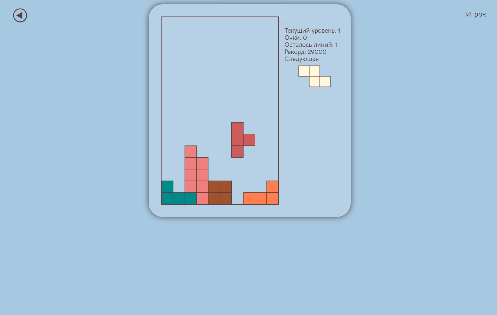

Веб-приложение «Игра «Тетрис» с функциями администратора реализует классические правила игры «Тетрис» с разделением ролей на администратора и игрока.
Цель игры – набрать наибольшее количество очков или времени.
Разработанное приложение требовует наличие операционной системы Windows 10 и выше и браузер Google Chrome 117 и выше.
НаверхСтартовой страницей веб-приложения является страница авторизации пользователя.
По ссылке «Зарегистрироваться» открывается страница регистрации.
НаверхПосле успешной авторизации/регистрации в системе осуществляется переход на стартовую страницу «Меню»
По нажатию на кнопку «Игрок» открывается всплывающее окно с информацией о игроке (логин, роль, рейтинг).
 Наверх
Наверх
Для перехода на страницу игры необходимо выбрать стартовый уровень (по умолчанию первый) и нажать «Играть».
Управление игрой происходит следующими клавишами:
Для начала игры необходимо опустить фигуру нажатием на кнопку. После этого фигуры начнут опускаться автоматически.
После того, как игрок собрал требуемое количество линий, осуществляется переход на следующий уровень. В связи с этим меняются условия игры (размер стакана, скорость падения фигур, требуемое количество линий, количество очков, начисляемое за 1 линию).
Изменение размерности стакана может быть как по высоте, так и по ширине в боьльшую или меньшую стороны. На рисунке ниже представлено изменение стакана при переходе на 2 уровень.
После заполения стакана игра заканчивается, и выводится всплывающее окно с результатом, при закрытии которого осуществляется переход в меню.
НаверхДля перехода на страницу рейтинга необходимо нажать «Рейтинг». На этой странице можно выбрать отображение рейтинга по очкам или по времени. Рейтиг состоит из 10-ти игроков.
Для перехода на страницу настроек необходимо нажать «Настройки». На этой странице можно настроить отображение сетки, проигрывание музыки, способ подсчёта очков и тему. Для сохранения выбранных настроек необходимо нажать кнопку «Назад».
Смена темы и отображения сетки представлены ниже.
 Наверх